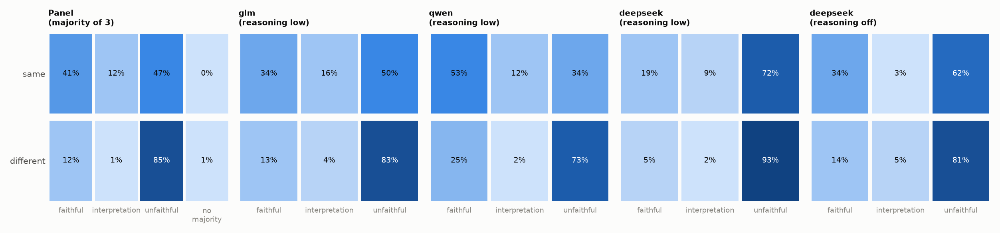
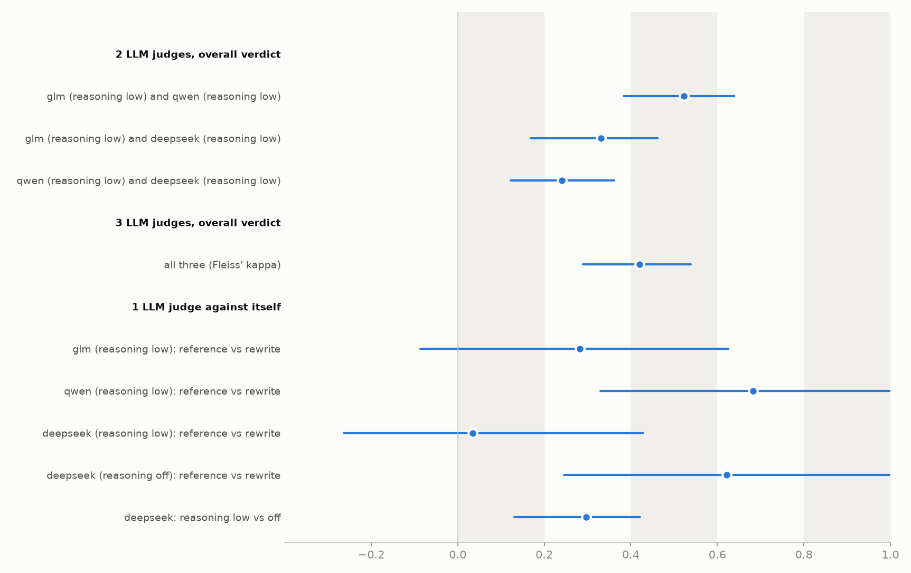
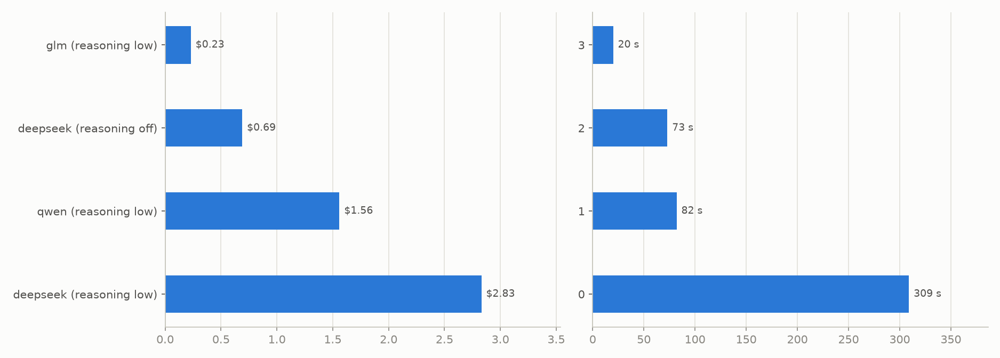

Abstract
We discuss a formal logic system to encode legal text (“Defeasible Deontic Logic”) embedded in Prolog. We give empirical evidence that open-weight LLMs can parse law from natural language into this formal system, and present a LLM-as-a-judge-panel evaluation protocol. We also present an agent backed by our Prolog reasoner, and as an example show it answers questions about articles from the US Code of Federal Regulations rigorously even in the face of linguistic and interpretive ambiguity.
Background
During the past four years I had an advisory role in the early R&D for various AI-enhanced medical devices (none have been announced yet, so cannot elaborate).
As I learned the intricacies of regulated development, I kept on wondering whether AI could bridge the gap between tech and compliance work, and help teams iterate faster while staying within the boundaries of safety. A general precondition seems to be to continuously guide and check R&D work against compliance guardrails, some sort of “compliance agent” perhaps?
Coincidentally, about a year ago, I started reading about the work done at AWS around automated reasoning checks for LLM guardrails (ARC), which gave me the inspiration to start tinkering. In the following I will describe the current state of the fifth iteration of this concept.
High-level goals
The starting question was fuzzy : “How to reason automatically over a legal framework, safely, with few resources and while keeping hallucinations to a minimum?”
- “Safely”: the system should not leak data, i.e. users should be able to run everything in-house (good on you if you have an in-house GPU datacenter, but that’s not the common case).
- “Few resources” : it would require a team of experts to encode a legal corpus into a grammar a computer can manipulate, so we would like to automate this part.
- “Hallucinations” : it’s common nowadays to stuff large amounts of text into an LLM to “augment” its generated answers with a knowledge base, but this does not bound any factual errors generated by the model. Even measuring, understanding LLM hallucinations is an active research field.
I opted to follow the ARC approach and use the best of the neural and symbolic worlds : have an LLM translate legal language into a formal logic that can be manipulated and reasoned about exactly.
Formal logics for everyday situations
The first step was to establish which formal system is expressive enough to encode the knowledge we are interested in. Legal norms involve obligations and prohibitions, as well as exceptions to the same. In other words, the “truth value” of a statement is contextual, something which is very cumbersome to encode with propositional and first-order logic.
Full disclosure: at the start of this project I was aware of modal logics, but I learned about the specific other logics below with lots of AI prompting, trial and error.
Modal logic : possibly and necessarily
First-order logic has predicates, Boolean connectives ∧, ∨, ¬ and →, and the quantifiers ∀x and ∃x. Modal logic adds two operators that qualify how something may be true:
- □φ , “necessarily φ”
- ◇φ , “possibly φ”
Classical logic is monotonic, i.e. adding a premise never removes a conclusion, whereas some modal logics are non-monotonic.
Deontic logic : must and may
Deontic logic is the modal logic of norms; in the admissible worlds of deontic logic, every obligation is met (which is not something that can always be said of the real world):
- □ is read O, “it is obligatory that”
- ◇ is read P, “it is permitted that”
- “forbidden”, Fφ, is O¬φ.
Defeasible logic : exceptions and amendments
Legal texts use “unless”, “except”, “notwithstanding” and “however”: they are often structured as a general rule followed by exceptions, which may have exceptions of their own (sometimes with start and end dates, etc).
Defeasible logic (Nute; Antoniou, Billington, Governatori and Maher) has three rules (“follows”, “follows unless”, “blocks a conclusion”), plus a superiority relation sup that decides which of two conflicting rules wins.
Defeasible deontic logic
DDL (Governatori, Rotolo 2006) combines the above approaches : every rule is tagged with a “mode”, and the modes decide which rules can attack which.
- O x is attacked by O ¬x and by P ¬x;
- P x is attacked only by O ¬x, since two permissions never conflict;
- a fact ¬x never attacks O x.
Implementation
Logic core
The knowledge base of legal norms is encoded as Prolog terms written in defeasible deontic logic that are used as plain data (i.e. never executed as programs); our engine (derived from Antoniou et al. (2006)) is an intepreter for such DDL terms (Prolog authors would call this a “meta-interpreter”).
Example: a disclosure is mandatory if proof is presented, unless law prohibits disclosure.
rule(r40a, defeasible, o, disclose(R), [record_about(R, P), requested(R), acceptable_proof(P)]).
rule(r40a_law, defeasible, o, ~disclose(R), [disclosure_prohibited_by_law(R)]).
sup(r40a_law, r40a). % the exception winsIn the example, suppose disclosure_prohibited_by_law(r1) holds. r40a_law attacks r40a: same mode o (obligation), opposite heads. r40a is overruled because no rule for disclose(r1) is superior to r40a_law. r40a_law survives, because its only attacker is beaten by sup(r40a_law, r40a). This is “team defeat”: an attacker can be beaten by any applicable rule for the same conclusion, not only by the rule it attacks.
The Appendix gives some technical details of our current implementation, e.g. how it enables abductive reasoning.
Data and Evaluation
Reference dataset
The reference natural language - DDL Prolog translations were computed zero-shot (i.e. instructions only) with a “frontier” model (Claude Opus 5.5). They have not been hand-checked by a legal expert so we cannot guarantee they are necessarily correct; on the other hand, I imagine it highly unlikely to find in 2026 a legal practitioner who is also conversant in logic programming. In the following we will try to understand whether expert translator judgement can be subsituted with an LLM.
Language Models
We experiment with 3 open-weight LLMs that are currently (October 2026) towards the top of the OpenRouter “intelligence” rankings: - Qwen 3.8 27b : qwen/qwen3.8-27b - DeepSeek 4 Flash : deepseek/deepseek-v4-flash (reasoning off or low) - GLM 5.3 Flash : glm-5.3-flash (reasoning low)
Calibration dataset
For each paragraph of a held-out section of law text, we: - take the reference Prolog encoding - rewrite the reference encoding in a meaning-preserving way : renaming the rules x1, x2 .. and switching the order of the rule’s conditions (provided the results interprets identically) - compute 6 mutants of the reference encoding : a rule or condition removed, a priority removed or reversed, a duty turned into a permission or a status, a conclusion negated, ora predicate swapped. A mutant is only kept if it interprets differently from the reference encoding.
Equivalence checking is done by loading the rest of the Prolog encoding, taking up to 3^8 permutations of ground fact values (true, false, unknown), and comparing the valuation of the derived encoding with the reference.
LLM panel

Fig 1. Confusion matrix for encoding quality judgements. The model returns an “interpretation” label when evidence cannot support either of the other cases.
The calibration dataset is fed zero-shot (i.e. instructions only, no translation examples) to a group of LLMs (Figure 1) in order to find out how reliably each model can tell whether an DDL Prolog encoding is faithful to the law text, a precondition for letting LLMs grade translations made by other LLMs. In the left panel of Fig. 1 we show the outcome a majority vote of 3 LLMs on the same question (a “LLM panel”).
In this configuration, Qwen has the lowest false positive rate, whereas Deepseek (low reasoning) has the lowest FNR. The panel of LLM judges seems to be effective at flagging meaning changes for human review (85% mutants are labeled as unfaithful to the reference), but also has high false detection rate.

Fig 2. LLM judge agreement (kappa and 95% confidence intervals).
Do LLM judges agree with each other, and what do they disagree on? Is a panel of LLM judges reliable to be used for automatic encoding ? We attempt to answer these question in Figure 2.
We consider a single example for the starting text (eCFR § 814.9 plus part 20, 16 paragraphs in total), using the accepted judgement produced by each LLM judge on each encoding. Sentence encodings are : the reference encoding, its meaning-preserving rewrite and 6 mutants. For each judge we keep its latest accepted overall verdict on each encoding, and line the judges up encoding by encoding. Agreement over the three labels is measured with kappa, the proportion of encodings on which the judges agree, corrected for the agreement expected by chance from how often each label is used: 0 means no better than chance, 1 means perfect agreement.
Each comparison uses the encodings all its judges have a verdict on, so N differs between rows. In addition to the 128 calibration encodings (16 references, 16 rewrites, 96 mutants), the judges also rated encodings that the models wrote in earlier translation runs. A judge never rates its own model’s output, so these add between 33 and 111 encodings depending on the pair.
- 2 LLM judges, overall verdict. Cohen kappa, for each pair of panel judges, on every encoding both have judged (N = 160 to 238).
- 3 LLM judges, overall verdict. Fleiss kappa, the extension of Cohen’s to more than two judges, on the 135 encodings all three LLMs have judged: κ = 0.42 (moderate). All models give the same verdict on 88 of them.
- A judge against itself. Here we test whether the LLM is sensitive to meaning-preserving rewrites. We also test whether DeepSeek at two reasoning levels agrees on identical encodings.
The 95% confidence intervals come from a cluster bootstrap. Verdicts on encodings of the same paragraph are not independent: a judge that misreads a paragraph tends to misjudge all its encodings. So we resample whole paragraphs, not single encodings. 2000 times, we draw 16 paragraphs with replacement and recompute kappa on all their encodings. The interval runs from the 2.5th to the 97.5th percentile of the results. With only 16 paragraphs the intervals are wide, especially for the self-agreement rows, which have one pair of encodings per paragraph.
The bands for kappa are from Landis & Koch: 0–0.2 slight, 0.2–0.4 fair, 0.4–0.6 moderate, 0.6–0.8 substantial, 0.8–1 almost perfect.
From these results we conclude that, for this domain, agreement between LLM judges is moderate at best (kappa = 47% for GLM-5.3-flash). LLMs seem to be sensitive to rewrites that do not change the meaning.

Fig 3. (Left) Cost per 100 API calls and (Right) median time to complete a judgement for the LLM APIs we considered.
Figure 3 looks at cost and token efficiency of the LLM services used here (via OpenRouter), GLM-5.3-flash (released most recently) wins on both counts, whereas DeepSeek 4 Flash is both most expensive and most “indecisive”.
Natural language agent
The natural language layer is built on top of the pi framework, a simple toolkit for coordinating LLM calls and tool use. The agent exposes our Prolog interpreter using a few tools:
- Getting oriented:
list_casesanduse_theory(which regulation, which cases),ddl_guide(the term schema, the rules and worked examples, read once),lookup_vocabulary(predicates with plain-English readings and suggestions for near misses),list_entitiesanddate_day. - Asking:
ask_query. The model writes the query as a Prolog term in a string, for exampleobl(expedite(q1)), with a day and optional what-if changes. The reply contains: the result: true, false or undefined; an explanation in English, generated from the proof; the provisions it is based on, quoted literally, with links to the official text. - Following up:
pending_questions: the facts an undecided answer depends on, with the change that a yes or a no would record,what_must_be_shown: the abduction described above,record_answerandretract_answer: they store the person’s replies as checked changes, which stay in force for the rest of the session
A rejected call comes back to the model as a tool error that gives the reason and the closest valid name, so the model can correct itself. The system prompt also gets a short section listing the theory’s cases, provisions and predicate readings. It tells the model to take any question on those topics to the tools, rather than answer from its own knowledge of the law.
Conclusions
It’s exciting that this system is able to produce high quality answers using open-weights LLMs and over a very complex domain such as law text.
At this point there are more questions than conclusions, and turning this into a production system will require more evidence from the semantic parsing setup (e.g. k-shot prompting, larger models etc).
References
G. Antoniou, D. Billington, G. Governatori, and M. Maher (2001). Representation results for defeasible logic. ACM Transactions on Computational Logic, 2(2):255–287
G. Antoniou, D. Billington, G. Governatori, M. Maher (2006). Embedding defeasible logic into logic programming. Theory and Practice of Logic Programming 6(6)
G. Governatori, A. Rotolo (2006). Logic of violations: a Gentzen system for reasoning with contrary-to-duty obligations. Australasian Journal of Logic 4
J. Richard Landis and Gary G. Koch (1977), The Measurement of Observer Agreement for Categorical Data. Biometrics 33
F. Maier, D. Nute (2010). Well-founded semantics for defeasible logic. Synthese 176
M. Maher (2001). Propositional defeasible logic has linear complexity. TPLP 1(6)
Appendix
Example session
We ask the same question of the same model (DeepSeek 4 Flash, reasoning : high) in two pi sessions. The first has no tools so the only way it can answer is via the knowledge stored in its pretrained weights. The second has only the DDL tools on the 20 CFR 402 theory.
# ungrounded: no tools, extensions, skills or context files
pi --no-tools -ne -ns -nc -na --model openrouter/deepseek/deepseek-v4-flash --thinking high
# grounded: the DDL tools, with pi's built-in file and shell tools off
DDL_THEORY=theories/cfr_20_402 DDL_MODEL=openrouter/deepseek/deepseek-v4-flash DDL_REASONING=high bin/ddl-pi -nbt -ncQuestion: What needs to be true for the Social Security Administration to expedite my FOIA request?
The “ungrounded” model produces an answer in a few seconds:
The Social Security Administration (SSA) will expedite a FOIA request if you demonstrate a compelling need, as defined by the FOIA statute (5 U.S.C. § 552(a)(6)(E)). […]
- Imminent threat to life or physical safety […]
- Loss of substantial due process rights […]
- Urgent need for information dissemination […]
- Humanitarian or public health/safety concern […]
- Other situation where SSA determines expedition is warranted […]
The answer is plausible, but checked against 20 CFR 402.65 it is wrong in several places:
- SSA’s rule has three grounds for a compelling need, not five. The humanitarian ground and the discretionary catch-all are not in it.
- The statute it cites defines only two grounds.
- Its “due process” ground is not how SSA words (a)(3), and it drops the condition that the information cannot be obtained elsewhere in a reasonable time.
- It never says that expedited processing must be requested at the same time as the FOIA request (the first sentence of (a)).
- It sends appeals to an “SSA FOIA Appeals Office” rather than the Executive Director for OPD.
With our grounding, the agent takes under a minute and 14 tool calls. The checker rejected two queries and the model corrected both. It reads the rules for 402.65 with lookup_vocabulary, then tests them with ask_query on the late_expedite case, including a what-if:
ask_query
case="late_expedite"
day=0
query="obl(expedite(q2))"
# false: 20 CFR 402.65(a), (b) would provide for it if expedited processing of q2
# was requested at the same time as the request, but the opposite is established.
ask_query case="late_expedite" day=0 query="obl(expedite(q2))" scenario=["add(expedite_requested_with_request(q2))"]
# trueIts answer lists exactly the conditions of 402.65:
- expedited processing requested together with the FOIA request;
- a statement certified to be true and correct;
- a compelling need, shown in one of the three ways of (a)(1)–(3), with every condition of (a)(2) and (a)(3).
It adds that requests that don’t qualify are processed normally and that a denial can be appealed (402.65(b)), and offers to check the person’s own situation.
The grounded session cost $0.008, more than ten times the ungrounded one ($0.0006).
Embedding DDL in Prolog
Some details of the approach :
- Tabled negation We use SWI-Prolog’s tabled negation tnot/1 because the meta-interpreter negates its own predicates (“not overruled”, “not beaten”), and conflicting exceptions or crossed priorities make those negations recursive. Negation-as-failure (\+) makes the interpreter loop forever. With tabling, SWI-Prolog evaluates negated rules under the well-founded semantics (see Maier and Nute (2010)). Every query terminates, every subgoal is computed once, and a goal caught in a cycle through negation returns undefined instead of looping (see next).
- Three-valued answers (true, false, undefined): Unknown facts reuse the same tabling mechanism. An askable fact that is not mentioned explicitly in a case is proved by unknown(C, A) :- tnot(unknown(C, A)). , which is undefined by construction, so the residual program names exactly the missing facts. tnot/1 needs ground goals, which is one reason for the grounding step below. As a result, the residual Prolog program contains the facts the answer needs in order to be fully evaluated. In other words, an undefined answer can be turned into a question (a clarification) to be asked to the user, or a detectable loop (which is an encoding defect therefore an exception).
- Finite grounding: rules are grounded over the case’s entities. Questions with variables (“May it disclose X?”) are answered once per entity.
- Time: Event logs written in Event Calculus style compile to validity intervals.
- What-if scenarios: We can add or remove facts and events, and a rule can ask a hypothetical question (“if consent were refused, would processing be forbidden?”)
- Abduction: “What must be true for this to hold?” - the engine finds minimal sets of unknown facts that would make a conclusion true (either by complete enumeration over a few unknowns, or with the s(CASP) approximation). We also integrate clingo for answer-set programming, which can check which unknowns can change an answer at all.